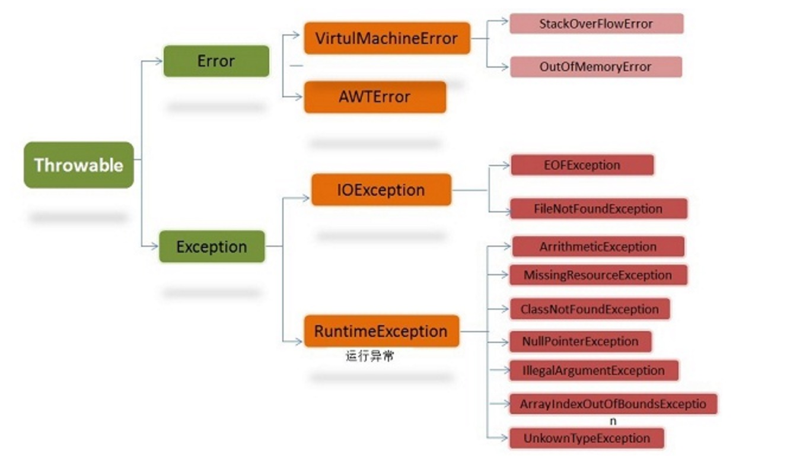

想到啥写啥~ 还有很多嫌麻烦没写的….
java注解
java 5 出来的东西~
注解分类(此处根据存在时间Retention分类，也可以根据注解目标Target分类)：编译时注解，字节码注解，运行时注解，分别对应不同的阶段
编译时注解：编译时期存在(.java)，字节码中不存在，由javac中的注解处理器进行处理，注解处理器见http://www.importnew.com/15246.html
字节码注解：注解保留到字节码中，当jvm加载.class文件时放弃掉~
运行时注解：注解存在运行时，通过反射获取注解内容进行处理
java Throwable

声明一下 try catch可以捕捉Throwable子类 并非只能捕捉Exception
java Exception可以分为可查异常(checked exceptions)和非可查异常(unchecked exceptions)
可查异常（编译器要求必须处置的异常）：正确的程序在运行中，很容易出现的、情理可容的异常状况。可查异常虽然是异常状况，但在一定程度上它的发生是可以预计的，而且一旦发生这种异常状况，就必须采取某种方式进行处理。
除了RuntimeException及其子类以外，其他的Exception类及其子类都属于可查异常。这种异常的特点是Java编译器会检查它，也就是说，当程序中可能出现这类异常，要么用try-catch语句捕获它，要么用throws子句声明抛出它，否则编译不会通过。
CGlib和JDKProxy
用于动态代理。
下文两者的对比来自http://blog.csdn.net/neosmith/article/details/51072840
JDKProxy：新生成一个类 继承Proxy接口和需要代理类的接口，从而实现代理。
优点
- 不依赖第三方jar包, 使用方便
缺点
- 只能代理实现了接口的类
- 执行速度较慢
CGlib：字节码增强，直接修改字节码生成一个代理类
优点
- 由于是动态生成字节码实现代理
- 可以代理没有实现接口的对象
缺点
- 不能代理
final类
适用场景
测试代码如下：
1 | package Aop; |
1 | package Aop; |
1 | package Aop; |
1 | package Aop; |
1 | package Aop; |
类加载器
jvm加载全过程
加载，验证，准备，解析，初始化，使用
加载：通过一个类的全限定名来获取定义此类的二进制字节流，将字节流所代表的静态存储结构转化为方法区的运行时数据结构，在内存中生成一个代表该类的java.lang.Class对象
验证：确保字节流中包含的信息符合当前虚拟机的要求
准备：为类变量分配内存并设置类变量初始值，初始值一般为零值，被final修饰的变量会被生成ConstantValue属性，被赋值为真实值
解析：
初始化：类变量赋值等~执行\<clinit>方法，\<clinit>方法是由编译器自动收集类中的所有类变量的赋值动作和静态语句块(static块)中的语句合并产生
系统提供3种类加载器
启动类加载器（Bootstrap）：虚拟机的一部分，加载存放在\<JAVA_HOME>\lib目录下的类
扩展类加载器（Extension）：加载存放在\<JAVA_HOME>\lib\ext目录下的类
应用程序加载器（Application）:加载用户路径(ClassPath)上的类库
双亲委派模型：要求除了顶层的类加载器外，其余类加载器应该有自己的父类加载器。父子关系使用组合（Composition）关系来复用父加载器的代码。
如果一个类加载器收到了类加载的请求，首先不会自己去尝试加载这个类，而是委派父类去加载，每一层都是如此，知道顶层的启动类加载器，如果父类无法进行加载（即搜索范围内没有找到所需的类），子加载器才会自己尝试加载。
Tomcat类加载器：
tomcat目录结构中，有3组目录（/common，/shared，/server）可以存放Java类库
Common类加载器：加载/common目录下存放的类库，被tomcat和所有的web应用程序共同使用
Catalina类加载器：加载/server目录下存放的类库，被tomcat使用，对所有web应用程序不可见
Shared类加载器：加载/shared目录下存放的类库，被web应用程序使用，tomcat不可见
WebApp类加载器：加载web应用程序中/WebApp/WEB-INF目录下存放的类库，仅被该web应用程序可见
Java内存模型
Java虚拟机内存模型，主要是为了屏蔽各个不同操作系统的内存访问差异，以实现Java程序在各平台能达到一致的内存访问结果。内存模型的主要目标是定义程序中各个变量的访问规则，即在虚拟机中将变量存储到内存和从内存取出变量这样的底层细节。规定所有变量都存储在主内存中，每条线程有自己的工作内存，其中保存了该线程使用到的变量的主内存副本拷贝，线程对变量的操作都必须在工作内存中运行，而不能直接对主内存进行操作。为了实现上述所说，Java定义了以下8种操作来完成
lock，unlock，read，load，use，assign，store，write
垃圾回收
http://blog.csdn.net/tjiyu/article/details/53983650
GC线程，收集器，GC root和引用计数
new和反射的区别
反射是动态的，在程序运行时，通过类名去寻找类的信息，从而生成对象。
反射生成对象前，类应该是被加载过的，否则会报ClassNotFoundException。
spring框架是事先就写好的框架，他内部的处理并不知道用户要写哪些类，因为那是以后由用他的人来定的，这时候你还能在spring内部去new吗？所以用户在用的时候才去配置文件中配置类路径，这是一个典型反射的例子。
###进程间通信
管道，共享内存，文件，网络，信号量
transient关键字
Serialable时，被该关键字修饰的变量不进行序列化